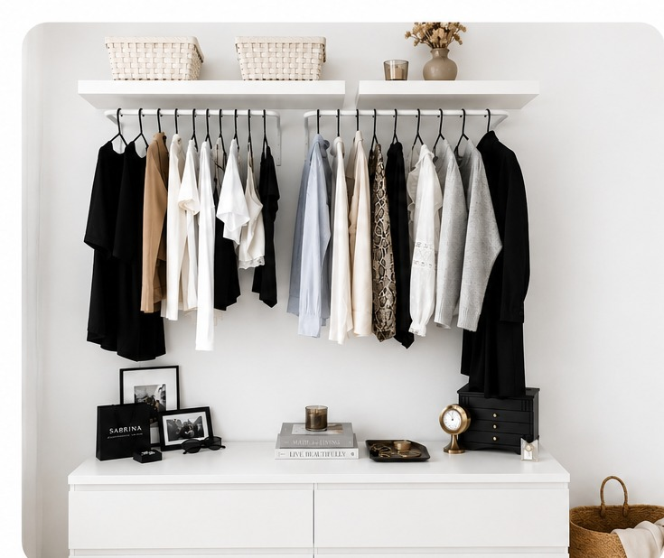
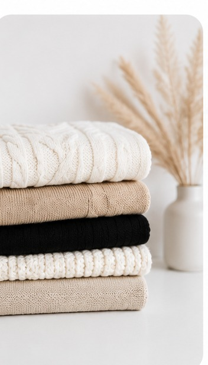
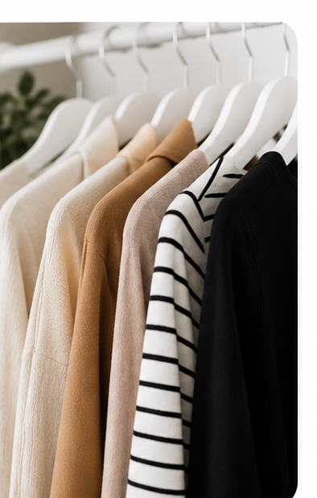
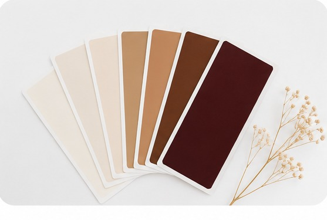
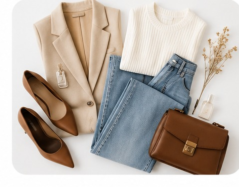
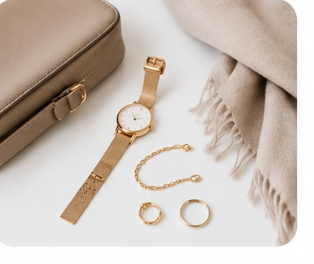

Création d'une garde-robe capsule
Et si, demain matin, t'habiller devenait enfin simple ?

Tu ouvres ton dressing.
Pas de longue hésitation.
Pas de « je n'ai rien à me mettre ».
Pas cette impression d'attendre qu'une tenue se compose, comme par magie, toute seule devant toi.
Tu regardes tes vêtements et tu sais.
Tu sais ce qui va ensemble.
Tu sais ce qui te va.
Tu sais ce qui correspond à ta journée.
Et surtout…
tu te reconnais dans ce que tu vois.
Parce qu'une garde-robe pensée pour toi ne devrait pas te demander davantage d'énergie.
Elle devrait t'en libérer.

S'habiller ne devrait pas être une charge mentale de plus
Chaque matin, il y a déjà tellement de choses auxquelles penser.
Le travail.
Les enfants parfois.
Les horaires.
Les rendez-vous.
Tout ce qu'il ne faut surtout pas oublier.
Alors quand, en plus, il faut rester dix minutes devant son dressing à essayer de comprendre quoi porter, ce petit choix du quotidien peut finir par devenir épuisant.
On essaye une tenue.
Puis une autre.
On change de pantalon.
On cherche ce qui pourrait aller avec ce haut.
Et finalement…
on revient souvent à ce que l'on porte toujours.
Pas forcément parce que c'est ce que l'on aime le plus.
Mais parce que c'est ce qui demande le moins de réflexion.
Et si on pouvait faire autrement ?
Une garde-robe capsule, oui. Mais la tienne.
Quand on parle de garde-robe capsule, on imagine parfois quelques vêtements neutres, des basiques et une penderie presque minimaliste.
Ce n'est pas ma vision.
Je ne crois pas qu'il existe une liste de vêtements que toutes les femmes devraient absolument posséder.
Parce que nous n'avons ni la même vie, ni les mêmes envies, ni la même personnalité.
Tes indispensables ne sont pas ceux d'une autre femme.
Tu travailles peut-être dans un environnement professionnel où certaines tenues sont nécessaires.
Tu cours peut-être toute la journée et tu as besoin de confort.
Tu adores peut-être les robes.
Les baskets.
Les imprimés.
Les accessoires.
Ou la couleur.
Et heureusement.
L'objectif n'est pas de créer la garde-robe parfaite.
C'est de créer celle qui fonctionne pour toi.


Simplifier sans t'effacer
Une garde-robe pratique ne devrait jamais devenir une garde-robe sans personnalité.
Au contraire.
Nous allons chercher cet équilibre entre ce qui facilite ton quotidien et ce qui raconte quelque chose de toi.
Tes couleurs, si tu connais ta colorimétrie.
Les coupes dans lesquelles tu te sens bien.
Les vêtements adaptés à ton rythme de vie.
Les associations que tu aimes.
Les pièces dont tu as réellement besoin.
Petit à petit, nous construisons une garde-robe dans laquelle les vêtements ne vivent plus chacun de leur côté.
Ils se répondent.
Ils s'associent.
Ils te permettent de créer plusieurs tenues sans devoir tout réinventer chaque matin.
Construire autour de ta vraie vie
Je ne veux pas construire le dressing d'une vie fantasmée.
Je veux construire celui de ta vraie vie.
Parce qu'une garde-robe peut être magnifique sur le papier et complètement inutile si elle ne correspond pas à ton quotidien.
Alors nous regarderons ensemble ce dont tu as réellement besoin.
Ta vie professionnelle.
Ton quotidien.
Tes sorties.
Tes habitudes.
Tes envies.
Ce que tu portes beaucoup.
Ce que tu aimerais porter davantage.
Et ce qui manque peut-être aujourd'hui pour que tout devienne plus simple et plus cohérent.
Le but n'est pas d'accumuler de nouvelles pièces.
C'est de comprendre lesquelles ont véritablement leur place.


Retrouver le plaisir de s'habiller
J'aimerais qu'après cet accompagnement, quelque chose change dans tes matins.
Que tu ouvres ton dressing sans cette petite fatigue qui arrive avant même d'avoir commencé ta journée.
Que tu puisses composer une tenue facilement.
Que tu saches que les vêtements qui sont devant toi ont été choisis pour une raison.
Et qu'au lieu de penser :
« Qu'est-ce que je vais bien pouvoir mettre ? »
tu puisses simplement te demander :
« De quoi ai-je envie aujourd'hui ? »
Parce qu'à partir du moment où les bases sont là, s'habiller peut redevenir ce que cela devrait aussi être :
un plaisir.
Plus de simplicité. Moins de charge mentale.
Oui, tu repartiras avec une garde-robe plus cohérente.
Des associations plus évidentes.
Une meilleure vision de ce que tu possèdes et de ce dont tu as réellement besoin.
Mais ce que j'aimerais surtout t'offrir, c'est du soulagement.
La sensation d'avoir un poids en moins.
De ne plus consacrer autant d'énergie à une décision que tu dois prendre chaque matin.
Et cette simplicité ne doit pas t'effacer.
Elle doit, au contraire, te permettre de prendre davantage de place.
Parce qu'au bout du compte, je veux que lorsque tu t'habilles…
tu te sentes femme.
Tu te sentes belle.
Et surtout,
tu te sentes toi.
Envie d'en discuter ?
Un premier échange suffit pour poser les bases, en douceur et sans engagement.